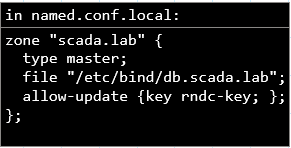
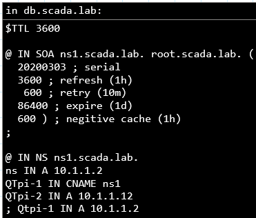

Standing Up DNS Server
Back to Linux Page
- Useful commands:
- sudo apt install bind9
- systemctl status isc-dhcp.server.service: checks if DHCP server is running
- systemctl status bind9: checks if bind9 is running
- systemctl reenable bind9: updates the symlink?
- systemctl restart bind9: restarts bind9
- named-checkzone scada.lab db.scada.lab: verifies the validity of zone files before resetting the configuration
- named-checkconf -z: verifies the syntax of the configuration files for Bind9
- dig @< IP of DNS server> < target name>: searches the DNS server specified and relays back lots of info. Optionally add a target name to get specific info on that domain.
Setting up zones
- add zone information to configuration file. (I view this as defining the zone)
- 
- after saving the change, restart the service. Run systemctl reload bind9.
- create db.< zone name> file.
- 
- The bottom of the file is the DNS records. The format of a record: hostname < tab> class < tab> DNS record type < tab> value.
- restart the rndc. Run sudo rndc reload.
- check the DNS server is running properly.
- Tutorial(Configure Bind9 as Primary Server)
- Tutorial (Bind9)